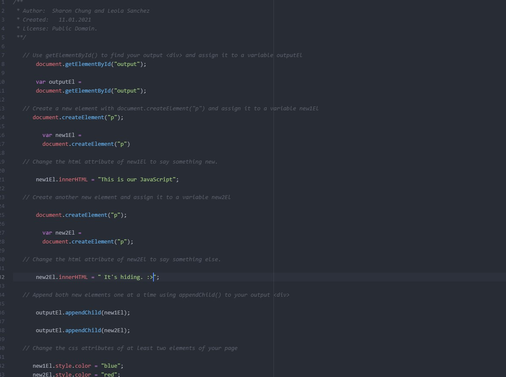
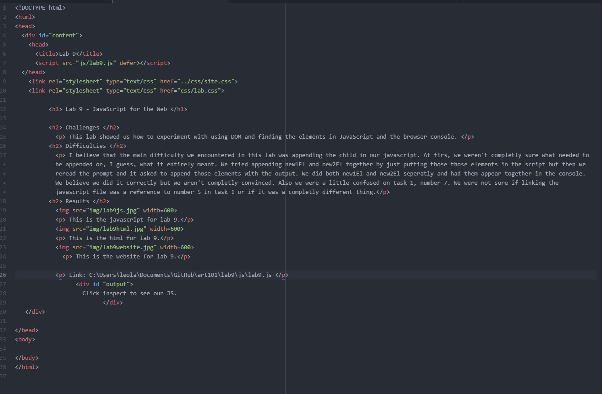

Lab 9 - JavaScript for the Web
Challenges
This lab showed us how to experiment with using DOM and finding the elements in JavaScript and the browser console.
Difficulties
We believe that the main difficulty we encountered in this lab was appending the child in our javascript. At first, we weren't completely sure what needed to be appended or, I guess, what it entirely meant. We tried appending new1El and new2El together by just putting those elements in the script but then we reread the prompt and it asked to append those elements with the output. We did both new1El and new2El separately and had them appear together in the console. We believe we did it correctly but we aren't completely convinced. Also we were a little confused on task 1, number 7. We were not sure if linking the javascript file was a reference to number 5 in task 1 or if it was a completely different thing.
Results
This is the javascript for lab 9.
This is the html for lab 9.
Link: C:\Users\leola\Documents\GitHub\art101\lab9\js\lab9.js